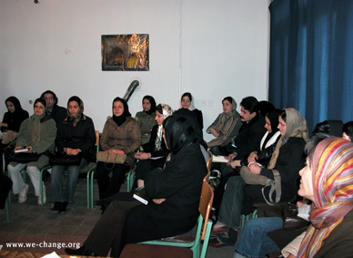
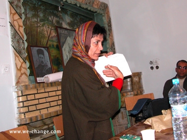
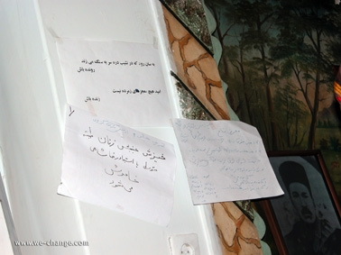
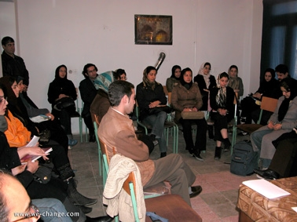
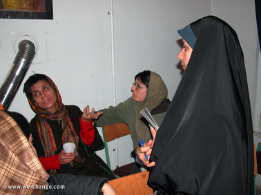
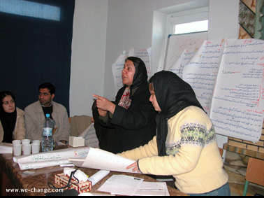
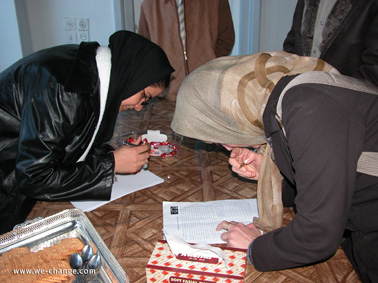
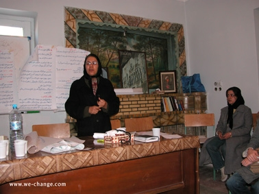
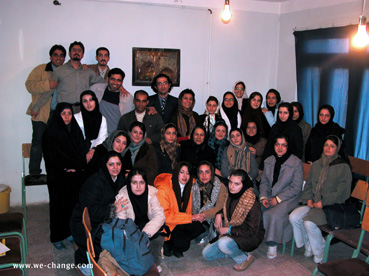

|
|

کمپین یک میلیون امضا به کرمانشاه رسید
گزارش:گلناز ملک/ عکس ها: راحله عسگری زاده
شنبه16 دی 1385
روز 8 ام دی ماه 1385 کارگاه آموزشی کمپین یک میلیون امضا با حضور 30 تن از فعالین کرمانشاه و به دعوت سازمان غیردولتی "ژیار" در این شهر برگزار شد.

کارگاه با سخنان منصوره شجاعی درباره ی جنبش زنان و تاریخچه ی آن در ایران آغاز شد. به گفته ی وی اولین جرقه های جنبش زنان ( بر مبنای تعاریف جامعه شناختی ای که در مورد "جنبش" ارائه می شود) بعد از انقلاب مشروطه و تدوین قانون اساسی زده شد.

منصوره شجاعی گفت: "زمانی که روشنفکران و انقلابیون آن دوره، قانون اساسی را نوشتند، زنان متوجه شدند که در این قانون در کنار مجانین و سفها قرار گرفته اند و حقی برای ایشان در نظر گرفته نشده است. نطفه ی جنبش زنان در همین هنگام بسته شد و هدف خود را مرتبط کردن قانون اساسی با خواست زنان قرار داد و از همان ابتدا در دو خط موازی شروع به تلاش و فعالیت کرد. یکی برای رسیدن به خواسته های سیاسی و اجتماعی مثل حق رای، داشتن تشکل ها، حضور در محافل اجتماعی و مراجع تصمیم گیری و ... و گروه دیگر برای سواد آموزی زنان و رسیدن به مدارج عالی تحصیل به موازات هم تلاش می کردند."

عضو کمپین یک میلیون امضا، علت خاموش شدن خیزش جنبش نوپای زنان طبقه ی متوسط ایران را شرايط دوران ظهور رضاشاه می داند. او در ادامه گفت :" خواسته ای که از دل مردم بر نیامده باشد تبدیل به داستانی فرمایشی می شود کما اینکه دیدیم تمام حقوقی که به زنان اهدا شد، مدتی بعد توسط خود زنان به عنوان نمادهای استبداد بخشیده شد."

شجاعی علت پا نگرفتن مجدد جنبش زنان بعد از برکناری رضا شاه و در دوران محمد رضای پهلوی را، حل شدن زنان در احزاب مردانه اي كه توجه به مسائل زنان نداشتند و نيز محدود شدن زنان در حركت از بالا در زمان محمدرضاشاه دانست.

او در ادامه اشاره ای به دوره ی سکوت جنبش زنان در دهه ی شصت و تا اواخر دهه ی 70 به علت جنگ و شریط سیاسی، اقتصادی و ... حاکم بر جامعه کرد وشروع پا گرفتن مجدد جنبش را و حرکت ها ی مستقل زنان را هم زمان با تشکیل گروه های دولتی زنان را از کنفرانس پکن سال 1994 دانست.

شجاعی مراسم 8 مارس در سال 78 در شهرکتاب را نقطه ی عطفی دانست که در آن روز جنبش واقعی و مستقل زنان فعالیت علنی خود را آغاز کرد و از آن زمان طرح خواست های حقوقی و علنی در غالب سمینار، تجمع و استفاده از فضا های عمومی شکل گرفت.

وی در ادامه ی سخنانش اذعان کرد: "نطفه ی کمپین یک میلیون امضا در 22 خرداد 85 بسته شد و در واقع مولود جنبش زنان از انقلاب مشروطه تا به امروز است."
به علت برف و بوران و بسته بودن راه ها نسرین ستوده، از حقوقدانان کمپین نتوانست در کارگاه شرکت کند و شهلا انتصاری ارائه ی هر دو مبحث حقوقی و شیوه ی کار چهره به چهره را بر عهده گرفت.

شهلا انتصاری آموزش چهره به چهره را از مهمترین قسمت های کمپین بر شمرد و گفت: " درست است که هدف ما جمع آوری یک میلیون امضا است ولی مهمتر از آن آموزشی است که صورت می گیرد و آگاهی ای است که زنان و مردان برابری خواه به آن دست می یابند .
به گفته وی در این پروسه چند اتفاق رخ می دهد: اول اینکه انسان ها از دردهای یکدیگر آگاه می شوند و این آگاهی تنها از طریق ارتباط با مردم به دست می آید. دیگر اینکه اعضای کمپین، صدای گروه خاموشان جامعه می شود یعنی زنانی که به دلیل موقعیت اجتماعی و فرهنگی خود نمی توانند صدای خود را به گوش دیگران برسانند و در نهایت پاسخی خواهد بود برای کسانی که مخالف اصلاح قوانین هستند و برای تخریب فعالین زنان دایم این موضوع را مطرح می کنند که فعالین، همه از قشر مرفه و بی درد جامعه هستند و کمپین نشان می دهد که همه ی زنان از هر قشر و طبقه ای یک درد مشترک دارند و آن هم این است که حقوق یک انسان کامل را ندارند."

در پایان کارگاه نیز شهلا انتصاری به پرسش های شرکت کنندگان در مورد چگونگی جمع آوری امضا و تشکیل کمیته ها در کرمانشاه پاسخ داد.